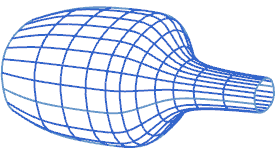

网格线
网格线是一个显示特征，用于在渲染样式设为静态线框的情况下显示自由曲面的形状及其等参曲线，当渲染样式设置为着色、带有淡化边的线框或者带隐藏边的线框时，不会显示网格线。

网格线设置可以建模首选项对话框的常规选项卡中找到。
U 向计数和V 向计数值表示在面的 U 向和 V 向网格线的数目。
如果网格计数值很小，显示的曲面可能会呈现锯齿状，要获得更光顺的显示，您可能需要使用更大数量的网格曲线。
网格线不会影响实际曲面的精度或光顺度。
在建模首选项中的分析选项卡中的面显示组中，可以控制网格线的线型和颜色。
现有面的 U 和 V 网格数量可以使用编辑对象显示  对话框中的线框显示组来进行编辑。
对话框中的线框显示组来进行编辑。
编辑对象显示  可以在实用工具工具条上找到。
可以在实用工具工具条上找到。